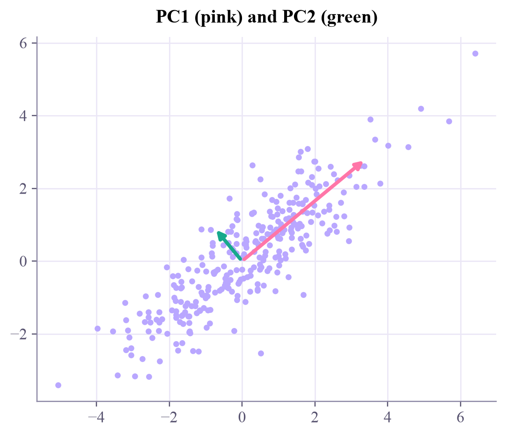
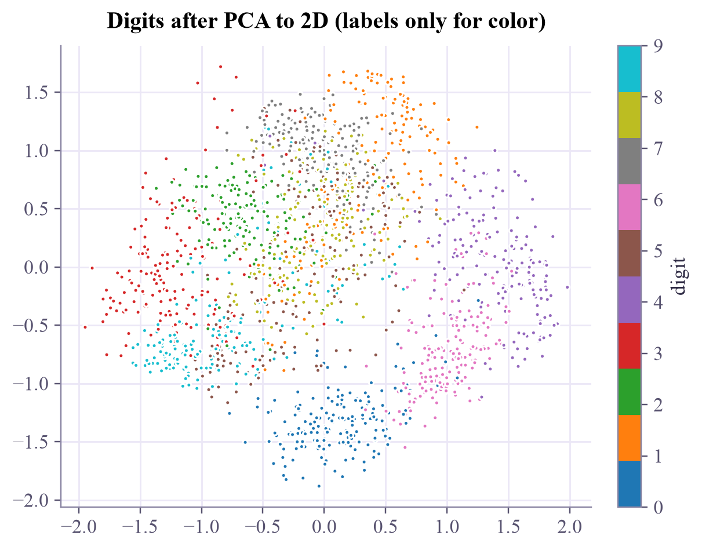
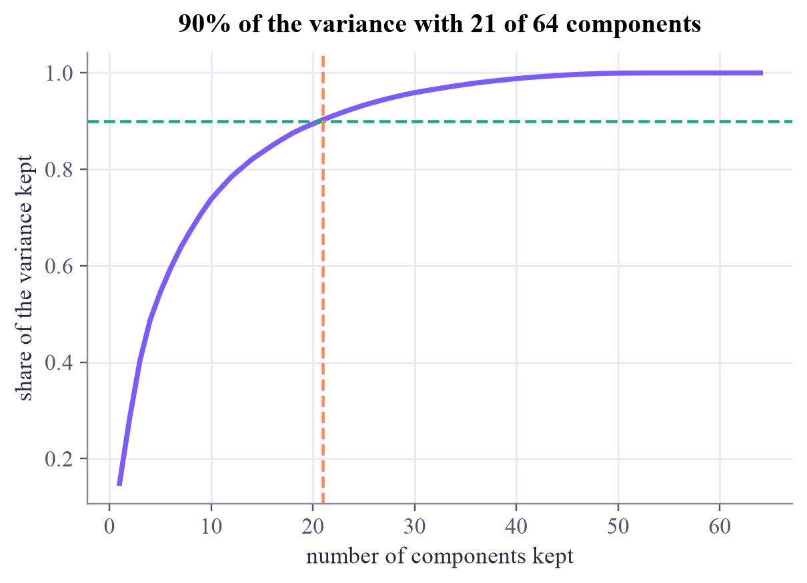
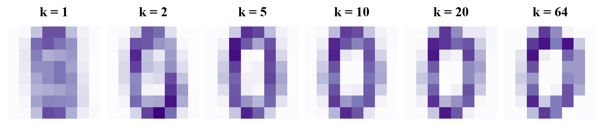

principal directions (rows): [[ 0.771 0.637] [-0.637 0.771]] share of the variance : [0.932 0.068]

Find the directions where the data varies most, keep a few, and describe every point with far fewer numbers.

Photograph a pencil from the side and you see its shape; photograph it from the end and you see a dot. Some viewing directions keep far more information than others. PCA finds the best viewing directions for data, so you can describe each point with a few numbers instead of dozens.
Center the data (subtract the mean). PC1 is the unit direction along which the projections are most spread out, their largest variance. PC2 is the most spread-out direction perpendicular to PC1, and so on: features give components, a rotated set of axes.
Mathematically they are the eigenvectors of the data's covariance matrix , and each eigenvalue is the variance along its direction. (The eigenvalue ideas from the Quantum Computing tutorial's week 3 show up here too.)
Compress: keep the top components and store each point as numbers, . Rebuild: . Two views of the same choice:
So the directions that keep the most variance are exactly the ones that lose the least when you rebuild.
How many components? Plot the share of variance kept against and pick, say, 90%. For the 8×8 digits, 21 of 64 components keep 90%.
Two cautions. Standardize features measured in different units first, or the one with the biggest numbers wins (week 1 again). And PCA never looks at labels: the most spread-out direction isn't always the most useful one for telling classes apart.
PCA rotates the axes to the directions of largest variance; keeping the top few gives the best possible straight-line compression.
PCA by hand. Drag the pink handle to turn the line. Each point drops onto it (the grey lines are what's lost); the meter shows how much spread survives. Then let PCA find the best angle.
Digits, rebuilt. Each digit is the mean digit plus a little of each component. Slide and watch the rebuild sharpen. Blue pixels in a component add ink, orange ones remove it.
In the first widget, turn the line until the meter is lowest: that's PC2, the direction PCA drops first. In the second, find the smallest at which you can still read the digit. Is it before or after the 90% line?
ml-w6d3.ipynb. To change the code and run it yourself, open the notebook in Google Colab (free, in your browser) or download it for your own Jupyter.import numpy as np
import matplotlib.pyplot as plt
from sklearn.decomposition import PCA
rng = np.random.default_rng(0)
cloud = rng.multivariate_normal([0, 0], [[3.0, 2.2], [2.2, 2.2]], size=300)
pca = PCA(n_components=2).fit(cloud)
print("principal directions (rows):\n", pca.components_.round(3))
print("share of the variance :", pca.explained_variance_ratio_.round(3))
fig, ax = plt.subplots(figsize=(4.8, 4.2), layout="constrained")
ax.scatter(cloud[:, 0], cloud[:, 1], s=10, color="#b9a7ff")
for direction, var, color in zip(pca.components_, pca.explained_variance_, ["#ff76a8", "#17a98c"]):
ax.annotate("", xy=2 * np.sqrt(var) * direction, xytext=(0, 0), arrowprops=dict(arrowstyle="-|>", lw=2.5, color=color))
ax.set_aspect("equal")
ax.set_title("PC1 (pink) and PC2 (green)")
plt.show()principal directions (rows): [[ 0.771 0.637] [-0.637 0.771]] share of the variance : [0.932 0.068]

centered = cloud - cloud.mean(axis=0)
cov = centered.T @ centered / (len(cloud) - 1)
values, vectors = np.linalg.eigh(cov) # eigh: for symmetric matrices, ascending order
order = np.argsort(values)[::-1] # largest variance first
values, vectors = values[order], vectors[:, order]
print("eigenvalues (variances):", values.round(3), " scikit-learn:", pca.explained_variance_.round(3))
print("PC1 by hand:", vectors[:, 0].round(3), " scikit-learn:", pca.components_[0].round(3), " (the sign may flip)")
# keep only PC1: what is kept, what is lost?
z = centered @ vectors[:, 0] # one number per point
rebuilt = np.outer(z, vectors[:, 0]) # back in 2D, on the PC1 line
lost = ((centered - rebuilt) ** 2).sum(axis=1).mean()
print(f"variance kept {z.var(ddof=1):.3f} + squared error lost {lost * len(cloud) / (len(cloud) - 1):.3f} "
f"= total {np.trace(cov):.3f}")eigenvalues (variances): [4.881 0.355] scikit-learn: [4.881 0.355] PC1 by hand: [-0.771 -0.637] scikit-learn: [0.771 0.637] (the sign may flip) variance kept 4.881 + squared error lost 0.355 = total 5.236
from sklearn.datasets import load_digits
digits = load_digits()
X = digits.data / 16.0 # 1797 images, 64 pixel values in [0, 1]
pca2 = PCA(n_components=2).fit(X)
Z = pca2.transform(X)
print("variance kept by 2 of 64 components:", round(pca2.explained_variance_ratio_.sum(), 3))
fig, ax = plt.subplots(figsize=(5.4, 4.2), layout="constrained")
points = ax.scatter(Z[:, 0], Z[:, 1], c=digits.target, cmap="tab10", s=7)
fig.colorbar(points, ax=ax, label="digit", ticks=range(10))
ax.set_title("Digits after PCA to 2D (labels only for color)")
plt.show()variance kept by 2 of 64 components: 0.285

full = PCA().fit(X)
cumulative = np.cumsum(full.explained_variance_ratio_)
k90 = int(np.searchsorted(cumulative, 0.90)) + 1
plt.plot(np.arange(1, 65), cumulative, color="#7b5cfa", lw=2.5)
plt.axhline(0.9, color="#17a98c", ls="--", lw=1.5)
plt.axvline(k90, color="#ff8a50", ls="--", lw=1.5)
plt.xlabel("number of components kept")
plt.ylabel("share of the variance kept")
plt.title(f"90% of the variance with {k90} of 64 components")
plt.show()
fig, axes = plt.subplots(1, 6, figsize=(8, 1.8), layout="constrained")
for ax, k in zip(axes, [1, 2, 5, 10, 20, 64]):
p = PCA(n_components=k).fit(X)
ax.imshow(p.inverse_transform(p.transform(X[:1]))[0].reshape(8, 8), cmap="Purples", vmin=0, vmax=1)
ax.set_title(f"k = {k}")
ax.axis("off")
plt.show()

Shrink the digits to components and train a logistic regression on what's left. How small can be before the test accuracy suffers?
from sklearn.model_selection import train_test_split
from sklearn.linear_model import LogisticRegression
from sklearn.pipeline import make_pipeline
X_train, X_test, y_train, y_test = train_test_split(X, digits.target, test_size=0.25, random_state=0, stratify=digits.target)
for k in [2, 5, 10, 20, 40, 64]:
model = None # TODO: make_pipeline(PCA(n_components=k), LogisticRegression(max_iter=2000)), fit on the training set
# TODO: print k and the test accuracyA pipeline fits each step on the training data only: make_pipeline(PCA(n_components=k), LogisticRegression(max_iter=2000)).fit(X_train, y_train), then .score(X_test, y_test).
from sklearn.model_selection import train_test_split
from sklearn.linear_model import LogisticRegression
from sklearn.pipeline import make_pipeline
X_train, X_test, y_train, y_test = train_test_split(X, digits.target, test_size=0.25, random_state=0, stratify=digits.target)
for k in [2, 5, 10, 20, 40, 64]:
model = make_pipeline(PCA(n_components=k), LogisticRegression(max_iter=2000)).fit(X_train, y_train)
print(f"k = {k:2d}: test accuracy {model.score(X_test, y_test):.3f}")
print("20 components get within about 1% of all 64, and 40 match them: the last directions add almost nothing.")k = 2: test accuracy 0.589 k = 5: test accuracy 0.849 k = 10: test accuracy 0.940 k = 20: test accuracy 0.956 k = 40: test accuracy 0.969 k = 64: test accuracy 0.969 20 components get within about 1% of all 64, and 40 match them: the last directions add almost nothing.
Today's quantum computers have few qubits, and loading data into them is costly. Quantum ML papers therefore often shrink the data with PCA to as many features as there are qubits, say 4 or 8, before encoding. The Quantum ML tutorial's first week does exactly this, with a "qubit budget".
ISLP section 12.2 (principal components analysis), including the proportion of variance explained. Jonathon Shlens' free "A tutorial on principal component analysis" (arXiv, 2014) builds the whole idea up from a toy example.
Next in Machine Learning: autoencoders, a neural network that learns its own, bendier compression.

Tap the button to save it. Short and steady wins.
Marked by mistake? Undo